DSP Processing
The DSP side is designed to handle the audio processing chain, including crossover filters, parametric EQ, delay, and limiters. Keeping these tasks on the DSP helps separate real-time audio work from the desktop interface.
Software Engineering Student & Audio R&D Engineer
I'm studying Software Engineering Technology at Duta Bangsa University in Surakarta. Outside campus, I work on audio R&D at RDW Professional Audio, mainly with Analog Devices DSP and digital loudspeaker management systems. My work schedule is flexible, so I split my time between classes and development.
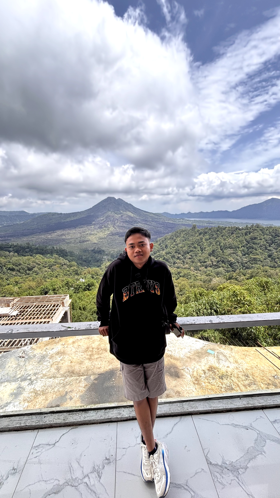
About
I like building things, whether it's a web app, an IoT project, or something that runs on audio hardware. I do a lot of my coding at night, usually with coffee nearby. Lately, I've been spending more time learning how Analog Devices DSP works and figuring out how different parts of a system fit together.
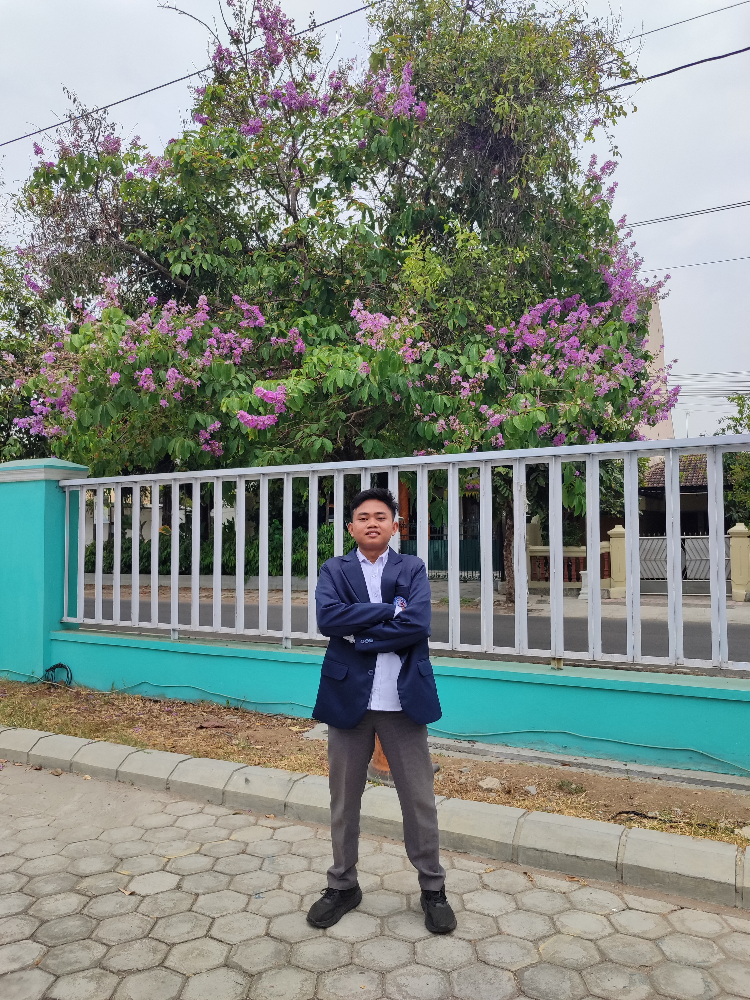
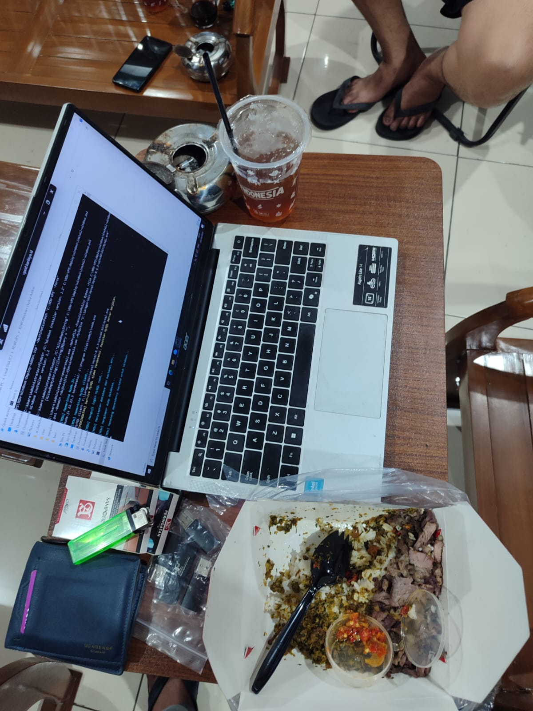
I studied electronics for three years and graduated in the top three of my department with a Highly Satisfactory result.
Working on DSP-based audio systems and DLMS development, with a focus on Analog Devices hardware and software integration.
February 2026 · 2nd place, representing SMKN 2 Surakarta.
September 2025 · National finalist with a score close to full marks.
SMPN 2 Grogol · Served for one term.
SMKN 2 Surakarta.
Skills
Featured Project
I'm working on a digital loudspeaker management system at RDW Professional Audio. The project brings together DSP hardware, embedded firmware, and a desktop app so sound engineers can set up and control their audio systems from one place.
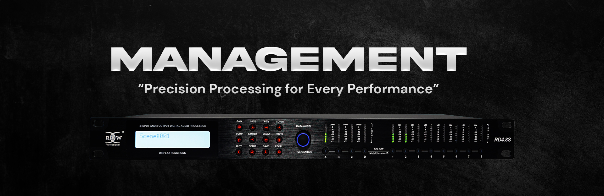
A DLMS has to do more than process audio. The controls need to be clear, the processing needs to be predictable, and changes made in the desktop app need to reach the hardware reliably. That's the part I'm focusing on.
The DSP side is designed to handle the audio processing chain, including crossover filters, parametric EQ, delay, and limiters. Keeping these tasks on the DSP helps separate real-time audio work from the desktop interface.
The desktop app uses JUCE and C++. The goal is to give sound engineers a straightforward way to adjust settings, view EQ curves, and monitor signal levels without digging through complicated menus.
One of the trickiest parts is keeping the app and hardware in sync. A change on screen needs to update the right DSP parameter, and the app also needs to show the current hardware state. That means paying attention to communication, parameter mapping, and how updates are handled while audio is running.
UI, development hardware, and DSP design.
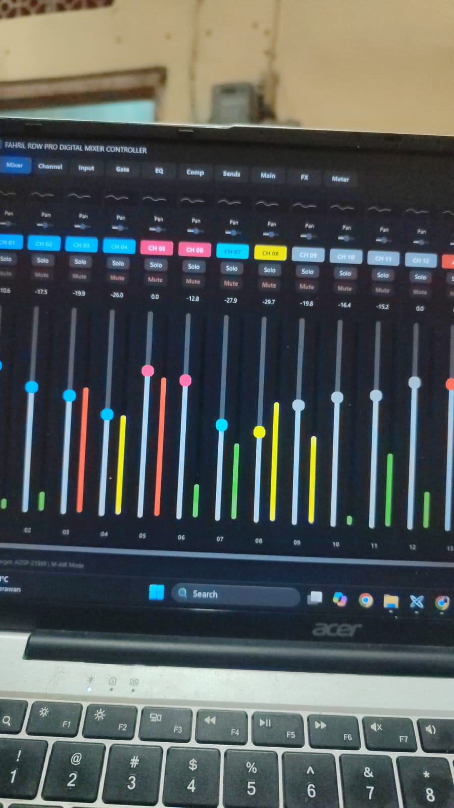
This project has pushed me to work across several areas at once: audio DSP, embedded development, desktop software, and system testing. It has also taught me that a good interface only works when the hardware behind it behaves reliably.
Moments
There's more to my days than coding and DSP. Here are a few photos from trips, events, and time spent with friends.
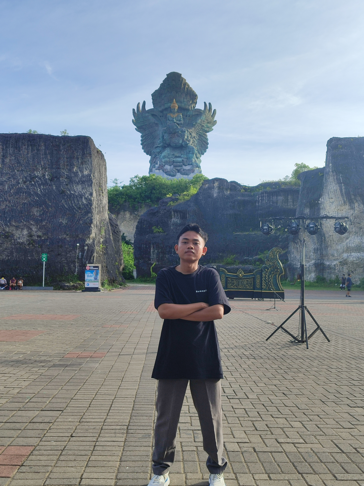
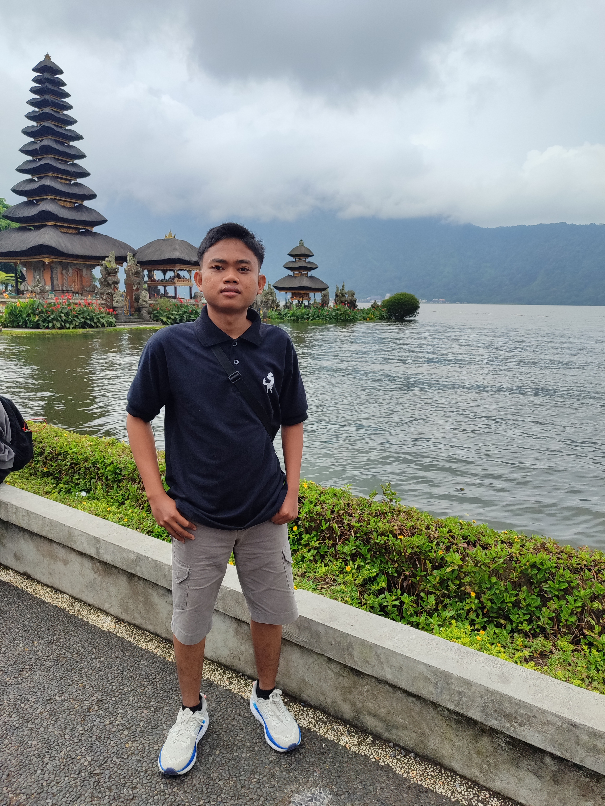
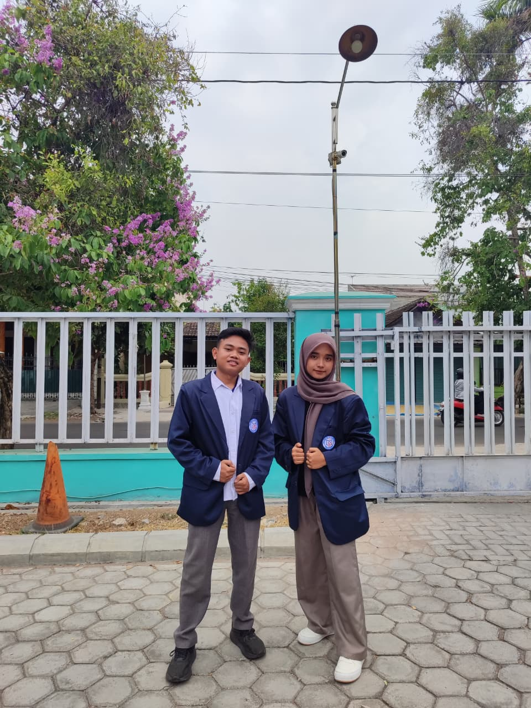
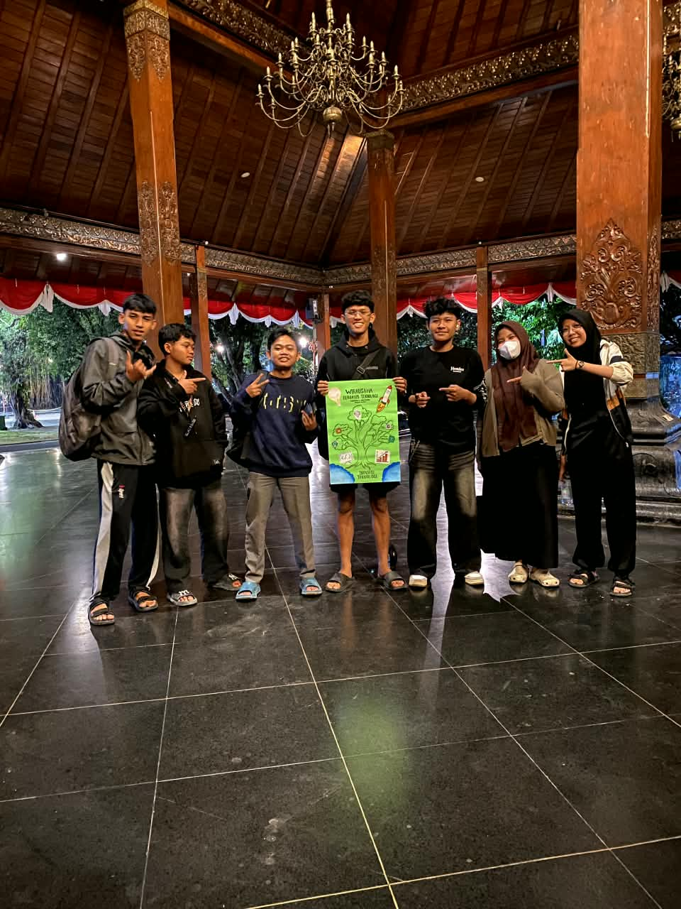
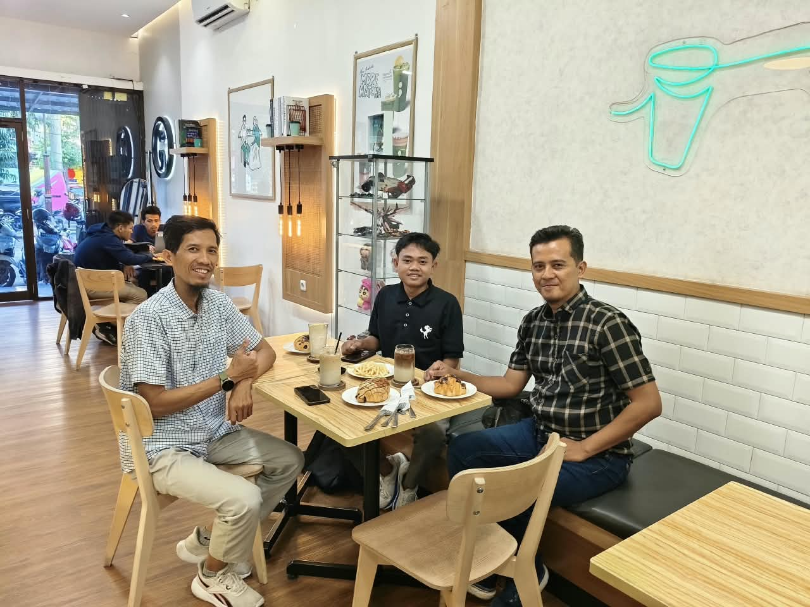
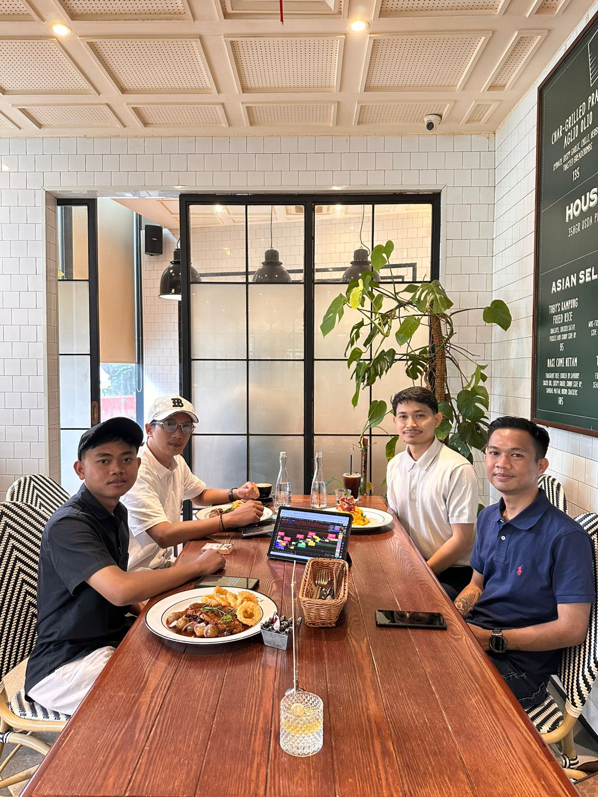
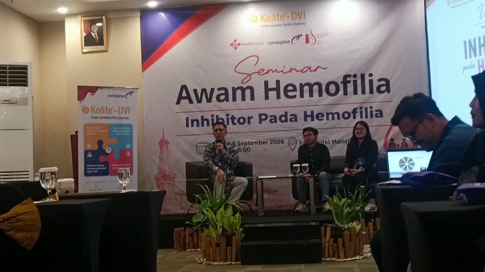
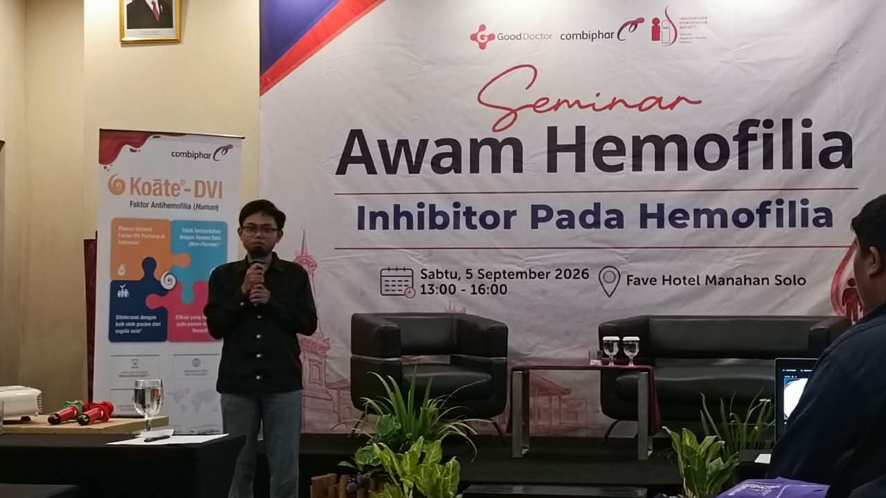
Contact
Want to talk about a project, audio tech, or software? Send me a message. I usually reply after class or when I'm done with my R&D work for the day.
rilinfo@ahmadfahril.web.id